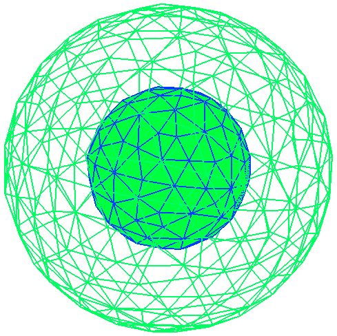
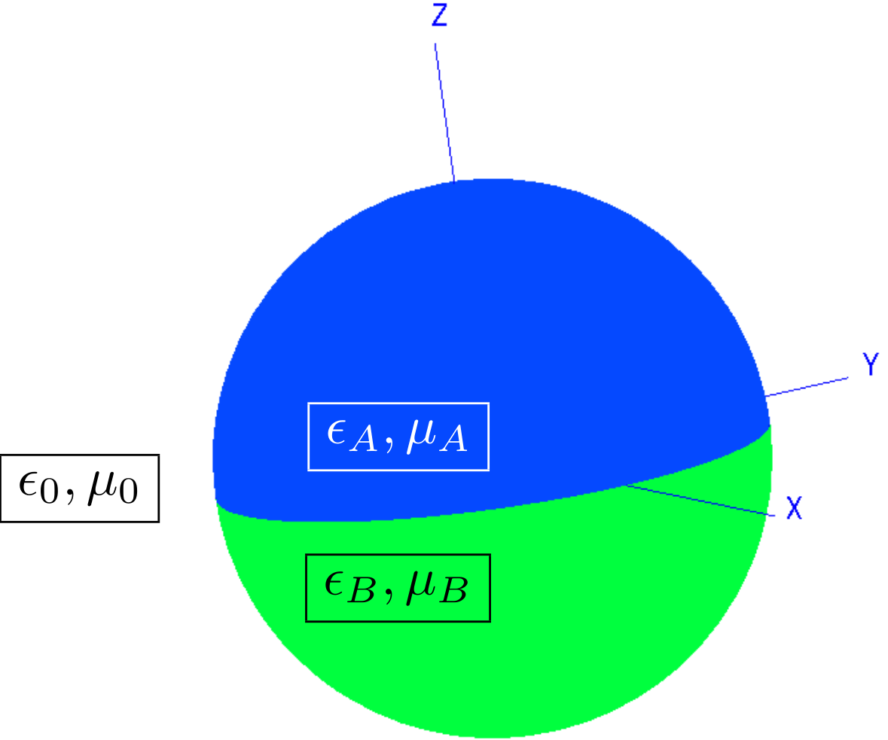
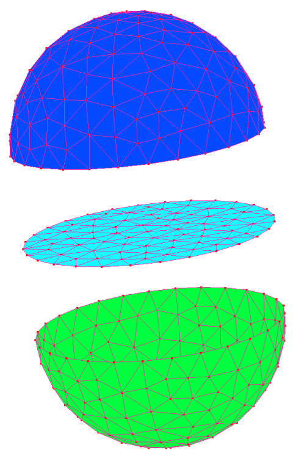
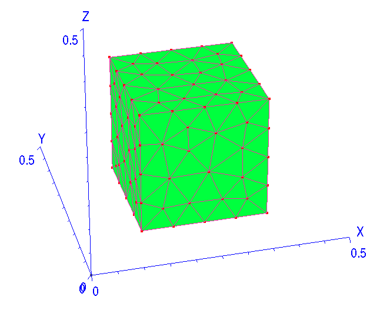
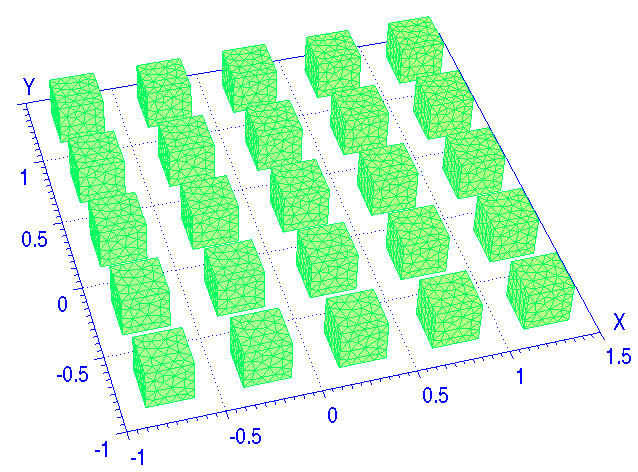
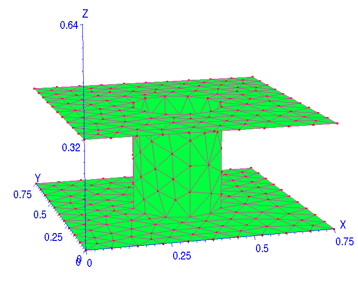
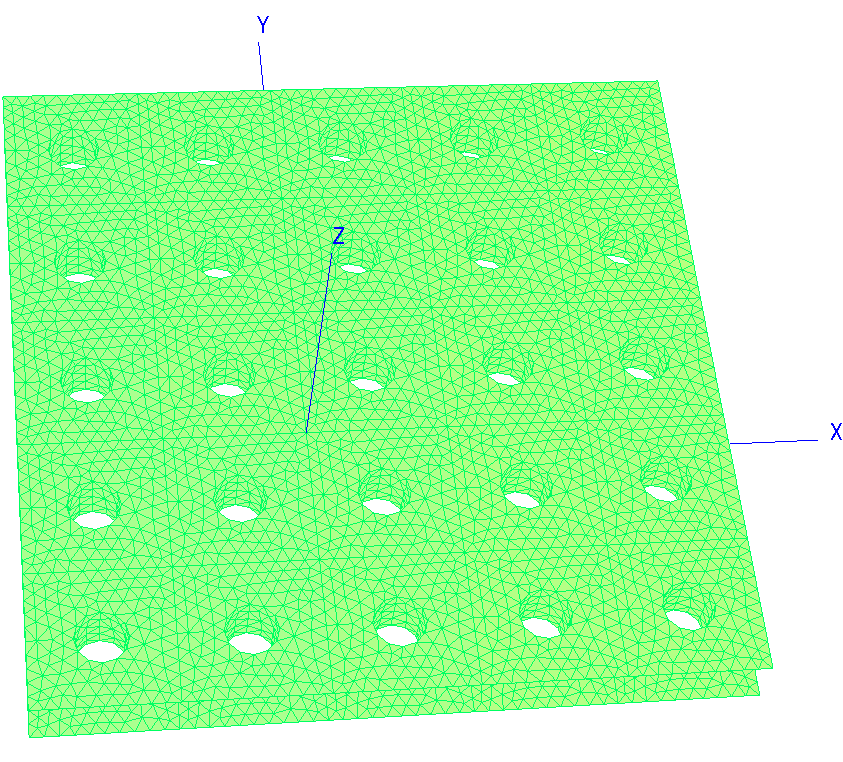
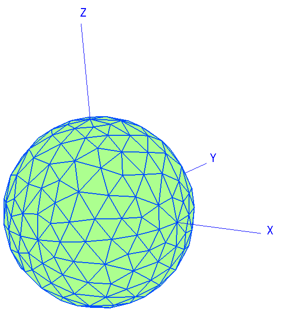
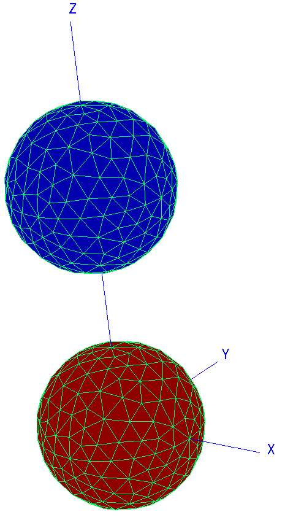

Geometry Descriptions in scuff-em
Geometries in scuff-em are described by simple text files
that are conventionally given the file extension .scuffgeo.
The .scuffgeo file format supports a variety of options for
specifying scattering geometries.
The simplest case is one in which you have a collection of
compact homogeneous objects (which may be nested inside
one another). In this case, your .scuffgeo
file will simply specify mesh files representing the
surfaces of these objects, as well as optional material
specifications for the frequency-dependent electrical properties
of the media inside.
(A mesh is a collection of flat triangular panels that
approximates a two-dimensional surface.
scuff-em doesn't do the meshing for you;
you use external meshing software such as
GMSH or
COMSOL
for that.)
In more complicated cases, it may not be possible to
describe your geometry as a simple collection of
objects. This is true, for example, if your geometry
contains any multi-material junctions---that is,
points at which three or more disparate media meet.
In this case your .scuffgeo file will specify
a series of three-dimensional regions and a set of
two-dimensional meshed surfaces lying between them.
Finally, your geometry may be infinitely extended in
one or two directions. Examples of 1D extended geometries
include this description of
parallel silicon beams,
while examples of 2D extended geometries include
a planar metamaterial array or an infinite square lattice
of spheres. In this case, your .scuffgeo file will
specify lattice vectors together with a description
of the objects, or the regions and surfaces, that constitute
just the unit-cell geometry, which is then infinitely
periodically replicated to constitute the actual geometry.
In what follows we will see how to write .scuffgeo
files that describe each of these types of geometries.
- Simple geometries: One or more compact objects (possibly nested)
- More complex geometries: multi-material junctions
- Extended geometries: periodic boundary conditions
-
.scuffgeofile syntax reference - A compendium of
.scuffgeofiles
Geometry Files in scuff-em
1. Simple Geometries: One or more compact objects (possibly nested)
The simplest scuff-em geometries consist of one or more compact objects---that is, finite volumes of homogeneous media, bounded by closed 2D surfaces. In this case, all meshed surfaces in the geometry must be closed surfaces, and no two object surfaces may touch or overlap. Each surface is then associated with a single homogeneous material region---namely, the region interior to that surface---and we collectively refer to that material region and its closed surface as an object.
The .scuffgeo file for geometries of this type consists simply
of a sequence of object declarations, one for each compact object
in the geometry. A typical object declaration section looks something
like this:
OBJECT UpperSphere
MESHFILE Sphere_458.msh
MATERIAL Gold
DISPLACED 0 0 3
ROTATED 45 ABOUT 0 0 1
ENDOBJECT
The string that follows the OBJECT keyword
(UpperSphere in this case) is an arbitrary
user-specified label that you may attach to your object
for ease of identifying it in output files, etc.
The only keyword that is strictly required within the
OBJECT...ENDOBJECT clause is MESHFILE. This specifies
a mesh file, generated by gmsh, comsol, or other meshing
tools, describing the surface of your object.
scuff-em will look for this file in several places:
- the current working directory
- the directory specified by the
SCUFF_MESH_PATHenvironment variable - any search directories specified using the
MESHPATHkeyword in the.scuffgeofile.
The latter two options allow you to set up one or more common repositories of mesh files which you can then re-use for scuff-em calculations launched from whatever directory you like.
The optional MATERIAL keyword is used to select a
scuff-em material designation
(in this case, Gold) for the medium interior to
your object. The actual definition of the material Gold
(given by a MATERIAL...ENDMATERIAL clause)
may be present in the .scuffgeo file before the
OBJECT specification, or may exist in a separate
material database file. If you don't specify a MATERIAL
for your object, it will be treated as a perfectly electrically
conducting (PEC) body.
The optional DISPLACED and ROTATED
keywords specify geometrical transformations
that are applied to the surface mesh after it is read in from
the mesh file. For example, if your mesh file describes a sphere
centered around the origin, and you include the line
DISPLACED 0 0 3 in your OBJECT...ENDOBJECT
clause, then your geometry as interpreted by
scuff-em will contain a sphere
centered around the point with cartesian coordinates
(0,0,3). For more details, see the
syntax reference
below.
Your .scuffgeo file may contain any number of
OBJECT...ENDOBJECT clauses.
The objects specified by these clauses may be
nested,
i.e. one object may be fully contained inside another
object; this will be autodetected by scuff-em.
(However, this simple way of specifying geometries has
the constraint that no two object surfaces may touch or intersect.
If you find yourself needing to describe geometries involving
objects whose surface touch---thus defining multi-material junctions---you
you have graduated to writing the
slightly more complicated type of .scuffgeo file described below.)
Here's an example of a simple .scuffgeo file describing
a smaller PEC sphere embedded inside a larger silicon dioxide
sphere.
# material specification for intrinsic silicon
MATERIAL SILICON
epsf = 1.035; # \epsilon_infinity
eps0 = 11.87; # \epsilon_0
wp = 6.6e15; # \plasmon frequency
Eps(w) = epsf + (eps0-epsf)/(1-(w/wp)^2);
ENDMATERIAL
OBJECT SiliconSphere
MESHFILE Sphere_R1P0.msh
MATERIAL Silicon
ENDOBJECT
OBJECT InnerSphere
MESHFILE Sphere_R0P5.msh
MATERIAL PEC
ENDOBJECT

Note that the MATERIAL PEC specification for the
inner sphere is actually superfluous---we could simply have
omitted it, because PEC is the default material assumed for
OBJECT clauses. On the other hand, if we had
instead said MATERIAL Vacuum, then we would be
describing an vacuum sphere inside our larger
silicon sphere---that is, a spherical shell of silicon,
as considered in
[this scuff-scatter example][SphericalShellExample].
2. More complex geometries: multi-material junctions
The attempt to describe a geometry simply as a collection of compact objects breaks down for more complicated situations. For example, consider the composite sphere (or "bihemisphere") depicted in the figure below; this is a spherical object formed by adjoining an upper hemisphere of material A to a lower hemisphere of material B.
Schematic depiction of a Bihemisphere

Mesh representations of the three interface surfaces (shown displaced for clarity)

Our first thought might be to think of the upper hemispherical volume as one
compact object, and the lower hemispherical volume as a second compact object.
But this doesn't work, because we can't assign a unique closed surface to each
compact object. Clearly the upper hemispherical surface "belongs" to object
UpperHemisphere, and the lower hemispherical surface "belongs" to
object LowerHemisphere. But to which volume do we assign the surface
of the equatorial plane?
More formally, the key aspect of the bihemisphere geometry that prevents it from being describable as a collection of compact objects is the presence of multi-material junctions---that is, regions of the geometry at which three or more homogeneous material regions meet. The equator of the bihemisphere is a multi-material junction.
(A note on terminology: In scuff-em parlance, a multi-material junction (MMJ) is a point or line at which three or more homogeneous regions meet. Of course any meshed surface in a geometry---including the closed surfaces used to describe simple compact-object geometries above---lies at the junction of at least two regions, and is thus technically a "multi-material" junction, but is not considered an MMJ for the purposes of the present discussion.)
Geometries involving multi-material junctions are described in scuff-em by explicitly specifying the various regions and surfaces that are present. Each region is a contiguous volume throughout which the material properties are spatially constant. Each surface is a mesh describing a closed or open 2D surface represented as a union of flat triangular panels. Each surface must lie at the interface between precisely two regions.
For example, in the bihemisphere geometry, there are three regions:
- The exterior medium (vacuum).
- The upper hemispherical volume (material A).
- The lower hemispherical volume (material B).
And there are three surfaces:
- The upper hemispherical surface, which is an interface between regions 1 and 2.
- The lower hemispherical surface, which is an interface between regions 1 and 3.
- The surface of the equatorial plane, which is an interface between regions 2 and 3.
The .scuffgeo file for geometry described
using regions and surfaces will consist, unsurprisingly,
of REGION lines and
SURFACE...ENDSURFACE clauses.
Each REGION line should look something like this:
REGION UpperHemisphereVolume MATERIAL Gold
The string identifier following the REGION keyword is an
arbitrary label you may assign to your region. The string identifier
following the MATERIAL keyword is a
scuff-em material designation
specifying the frequency-dependent material properties
of the region.
All scuff-em geometries by default
start off with an implicitly defined region
named Exterior, of material VACUUM.
If you want to change the material properties of the
exterior medium---for example, if your entire scattering geometry
is embedded in ethanol---you can say something like
REGION Exterior MATERIAL Ethanol
Otherwise, you can refer freely to the region named
Exterior without defining it, as it will
be automatically present in all scuff-em
geometries.
Surfaces in a regions-and-surfaces geometry are identified
by SURFACE...ENDSURFACE clauses.
These are similar to OBJECT...ENDOBJECT
clauses, but with a couple of differences. A typical
example looks like this:
SURFACE UpperHemisphereSurface
MESHFILE UpperHemisphereSurface.msh
REGIONS Exterior UpperHemisphereVolume
ENDSURFACE
The string identifier following the SURFACE keyword
is an arbitrary label you may assign to your surface to
help identify it in output files, etc.
The mandatory MESHFILE keyword specifies the
name of a file from which scuff-em
will attempt to read the surface mesh.
The mandatory REGIONS keyword identifies the two
regions that lie on the two sides of the surface.
These should be regions that were previously declared using
REGION statements (with the exception of the
region Exteror, which is always implicitly
present.)
The order in which you specify surfaces is important for the internal workings of scuff-em, although most output quantities reported by most scuff-em codes will not depend on this ordering.
The distinction is this: The surface normal vector is taken to
point into the first region specified with the
REGIONS keyword, and thus away from the second
region. What this means internally is that surface currents on
the surface contribute to the fields in the first region with a
positive sign, and to the fields in the second region
with a negative sign. Again, however, this is all handled
consistently within the internal workings of the code, so flipping
the order in the REGION specification should not
lead to any differences in physically relevant output quantities.
(If you flip the order of the regions, the currents on the surface
change sign, and their contributions to the fields in each region
change sign, so the fields don't change.)
In addition to the mandatory MESHFILE
and REGIONS keyword, the SURFACE...ENDSURFACE
may also include DISPLACED and/or ROTATED
statements to apply geometrical transforms to your surface,
as is possible in OBJECT...ENDOBJECT clauses.
Note that any geometry that may be represented in the simpler
form discussed above (as a sequence of OBJECT...ENDOBJECT
clauses) may also be represented in the regions-and-surfaces
language.
A compact object consists of a single region (the interior of
the object) and a single surface (lying at the interface between
the interior and exterior regions). Thus, if the meshfile
MySphere.msh represents a meshed sphere, then the
following two .scuffgeo files are equivalent:
REGION SphereInterior MATERIAL Gold
SURFACE TheSphere
MESHFILE Sphere.msh
REGIONS Exterior SphereInterior
ENDSURFACE
OBJECT TheSphere
MESHFILE Sphere.msh
MATERIAL Gold
ENDSURFACE
(And see below for an example of how to rewrite the nested-spheres example from above in the regions-and-surfaces language.)
In some cases it may be convenient to write a single meshfile
that contains mesh descriptions for multiple surfaces
in your geometry. This may be done by including a
MESHTAG specification in your
SURFACE...ENDSURFACE clause:
SURFACE MySurface
MESHFILE MyMeshFile.msh
MESHTAG 12
REGIONS MyRegion1 MyRegion2
ENDSURFACE
What this does is to instruct scuff-em to
read from MyMeshFile.msh only those triangular panels
that have been tagged by the meshing program as belonging
to entity 12.
(Different meshing programs have different ways of tagging mesh
entities. In gmsh, the tag corresponds to
what gmsh calls the "physical region;"
it is the argument that enters statements
such as Physical Surface(12)={...} in the .geo
file, and it is the number printed as the physical-number
field in the .msh output file.)
As an example, here's a .scuffgeo file for the bihemisphere
geometry described above. The meshfile BiHemisphere_126.msh
was produced by a gmsh file named
[BiHemisphere.geo](BiHemisphere.geo};
note that the three separate interface surfaces
are created with three separate Physical Surface
commands, each specifying a different tag, which is then used
in the .scuffgeo file below to distinguish different
entities in the .msh file.
REGION Exterior MATERIAL VACUUM
REGION UpperHemisphere MATERIAL CONST_EPS_20
REGION LowerHemisphere MATERIAL CONST_EPS_2
SURFACE LowerHemisphereSurface
MESHFILE BiHemisphere_126.msh
MESHTAG 1
REGIONS Exterior LowerHemisphere
ENDSURFACE
SURFACE UpperHemisphereSurface
MESHFILE BiHemisphere_126.msh
MESHTAG 2
REGIONS Exterior UpperHemisphere
ENDSURFACE
SURFACE EquatorialPlane
MESHFILE BiHemisphere_126.msh
PHYSICAL_REGION 3
REGIONS UpperHemisphere LowerHemisphere
ENDSURFACE
3. Extended geometries: periodic boundary conditions
scuff-em can handle geometries that are
infinitely extended (that is, periodically repeated) in one or two
dimensions using Bloch-periodic boundary conditions. In this case,
your .scuffgeo file will contain a specification of
the objects, or the surfaces and regions, that constitute the
unit-cell geometry, together with a specification of the
lattice vectors that describe how the unit cell is periodically
repeated.
Note: The current version of scuff-em requires that 2D lattice basis vectors have vanishing z component and that 1D lattice basis vectors have vanishing y and z components. In other words, for 2D periodicity the lattice vectors must live in the xy plane, while for 1D periodicity the lattice vector must be aligned with the x axis. This places no restriction on the actual geometric configurations that may be treated, but may be inconvenient for some users who are accustomed to setting up their periodic geometries in a different way. (For example, if you are studying thin films, and you are used to having the film surfaces parallel to the yz plane with the film thickness in the x direction, you will need to rotate your coordinate system so that the surfaces re parallel to the xy plane and the thickness is in the z direction.) This limitation may be lifted in a future code release.
Note: An additional restriction in the current version of scuff-em is that 2D lattices must be rectangular lattices: the first
LATTICEvector must have only its component nonzero, while the secondLATTICEvector must have only its component nonzero (although the two vectors may have different lengths). . This actually does place restrictions on the geometries that may be treated (for example, it excludes hexagonal lattices), and it will be remedied as soon as somebody wants to run calculations on a non-square-lattice geometry and is willing to help me test the new feature.
The lattice is specified using a LATTICE...ENDLATTICE
section. For example, a square lattice with lattice constant
of 1 m would look like this:
LATTICE
VECTOR 1 0
VECTOR 0 1
ENDLATTICE
Each VECTOR xx yy statement adds a new lattice vector
with cartesian components of (xx,yy) length units.
You may specify one or two VECTOR statements.
If you specify a single VECTOR, your unit-cell
geometry will be periodically repeated in just that one direction.
If you specify two VECTOR statements, your unit-cell
geometry will be periodically repeated in a two-dimensional lattice
pattern.
Having specified the lattice vectors, the remainder of your
.scuffgeo file just consists of a specification of
the unit-cell geometry as if it were a standalone compact
geometry. For example, you may include OBJECT...ENDOBJECT
sections to describe any compact objects that exist inside
the unit cell, or REGION statements and SURFACE...ENDSURFACE
sections to describe more complicated unit-cell geometries.
Compact objects fully contained in the unit cell
The simplest case is that in which your geometry is simply an array of isolated compact objects (with "isolated" here meaning that each object does not touch its periodically repeated images.) In this case, you will want to make sure that the objects lie entirely within the unit cell (not straddling its boundaries),
For example, here's a .scuffgeo file describing
a square lattice of cubical nanoparticles:
The unit cell geometry

The innermost 25 cells of the full geometry

The .scuffgeo file
LATTICE
VECTOR 0.5 0
VECTOR 0.0 0.5
ENDLATTICE
OBJECT CubicalNanoparticle
MESHFILE Cube.msh
MATERIAL Silicon
ENDOBJECT
Surfaces that straddle the unit-cell boundary
More generally, your unit-cell geometry may include surfaces
that straddle the unit-cell boundary. (This will be the case
whenever the infinite surfaces you are describing are
connected, as opposed to the isolated arrays of objects
considered above). For example, here's a .scuffgeo
file representing a thin metallic film perforated by an
array of holes. The parameters here are chosen to mimic
the geometry studied by
Martin-Moreno et al, Physical Review Letters 86 1114 (2001).
The unit cell geometry

The innermost 25 cells of the full geometry

The .scuffgeo file
LATTICE
VECTOR 0.75 0
VECTOR 0.0 0.75
ENDLATTICE
OBJECT UnitCellMesh
MESHFILE PFT_794.msh
MATERIAL Gold
ENDOBJECT
Meshing constraints for surfaces that straddle the unit-cell boundary
There is an important constraint on the surface meshes that may be
used to define the unit-cell geometry for problems involving continuous symmetries.
The constraint is this: For any panel edge that lies on a unit-cell boundary, there must be an identical edge lying on the opposite side of the unit-cell boundary. One way to think about this is that the periodically-repeated images of the unit-cell geometry must all fit together "nicely" at the unit-cell boundaries, as indicated in the right panel of the figure above.
4. Syntax reference for the .scuffgeo file format
A .scuffgeo file consists of one or more multiline
sections (delimited by starting and ending keywords)
plus zero or more single-line statements.
Blank lines and comments (lines beginning with a # symbol)
are ignored in .scuffgeo files.
MESHPATH statement
| Keyword | Description |
|---|---|
MESHPATH my-mesh-path |
Adds the directory my-mesh-path to the path searched by scuff-em for mesh files. |
REGION statement
| Keyword | Description |
|---|---|
REGION Name
MATERIAL Material
|
Adds a new homogeneous material region
to the geometry with name Name
and material properties described by the
scuff-em
material designation Material.
As discussed above, REGION
statements are not needed
for geometries consisting of compact homogeneous
bodies described by OBJECT sections.
(Each OBJECT section automatically
adds a new region to the problem for the interior
of the object in question.) REGION
statements are generally only necessary when your
geometry contains
multi-material junctions.
|
OBJECT...ENDOBJECT sections
| Keyword | Description |
|---|---|
OBJECT object label |
Begins an object declaration for an object with the specified label. |
MESHFILE MyFile.msh |
Specifies the mesh file that defines the closed surface of the object. |
MESHTAG xx |
Specifies that only panels tagged in the mesh
file with tag xx are to be considered
part of the surface of this object. This allows a
single .msh file to contain multiple
closed surfaces each defining distinct objects.
|
MATERIAL MyMaterial |
Specifies a scuff-em material designation for the homogeneous medium interior to the object. |
DISPLACED xx yy zz |
Indicates that the contents of the specified mesh file are to be translated through a displacement vector with cartesian components (xx, yy, zzbefore inclusion in the geometry. |
ROTATED dd ABOUT nx ny nz |
Indicates that the contents of the specified mesh file are to be rotated through an angle of dd degrees (degrees, not radians) about an axis passing through the origin and through the point with cartesian coordinates (nx, ny, nz/before inclusion in the geometry. |
ENDOBJECT |
Ends the object declaration. |
SURFACE...ENDSURFACE sections
LATTICE...ENDLATTICE sections
MATERIAL...ENDMATERIAL sections
For details on how to write a
MATERIALsection, see here.
5. A compendium of sample .scuffgeo files
The images corresponding to the .scuffgeo files below were
obtained using the scuff-analyze utility distributed with
the scuff-em suite, like this:
% scuff-analyze --geometry MyGeometry.scuffgeo --WriteGMSHFiles
This produces a gmsh post-processing file
named MyGeometry.pp that you can open in
gmsh to visualize your geometry and
make sure scuff-em interpreted your
.scuffgeo file as you intended.
This is generally a good thing to do before launching any serious
calculations.
A single perfectly electrically conducting (PEC) sphere
This is perhaps the simplest imaginable scuff-em geometry.
OBJECT PECSphere
MESHFILE Sphere.msh
ENDOBJECT

A gold sphere and a silicon sphere
This example illustrates the use of the DISPLACED
keyword to displace a surface mesh relative to its positioning
in the mesh file. Note in particular that this keyword allows
us to use the same mesh file to describe two different spheres,
which speeds things up by allowing scuff-em
to reuse certain parts of the calculation, thus eliminating
redundant numerical work. (Without the DISPLACED
keyword in this example, the two spheres would be sitting on
top of one another.)
MATERIAL SILICON
epsf = 1.035; # \epsilon_infinity
eps0 = 11.87; # \epsilon_0
wp = 6.6e15; # \plasmon frequency
Eps(w) = epsf + (eps0-epsf)/(1-(w/wp)^2);
ENDMATERIAL
MATERIAL GOLD
wp = 1.37e16;
gamma = 5.32e13;
Eps(w) = 1 - wp^2 / (w * (w + i*gamma));
ENDMATERIAL
MESHPATH /home/homer/work/MeshFiles
OBJECT GoldSphere
MESHFILE Sphere.msh
MATERIAL Gold
DISPLACED 0 0 3
ENDOBJECT
OBJECT SiliconSphere
MESHFILE Sphere.msh
MATERIAL Silicon
ENDOBJECT

A small gold sphere inside a larger silicon dioxide sphere
MATERIAL SILICON
epsf = 1.035; # \epsilon_infinity
eps0 = 11.87; # \epsilon_0
wp = 6.6e15; # \plasmon frequency
Eps(w) = epsf + (eps0-epsf)/(1-(w/wp)^2);
ENDMATERIAL
OBJECT SiliconSphere
MESHFILE Sphere_R1P0.msh
MATERIAL Silicon
ENDOBJECT
OBJECT InnerSphere
MESHFILE Sphere_R0P5.msh
MATERIAL PEC
ENDOBJECT